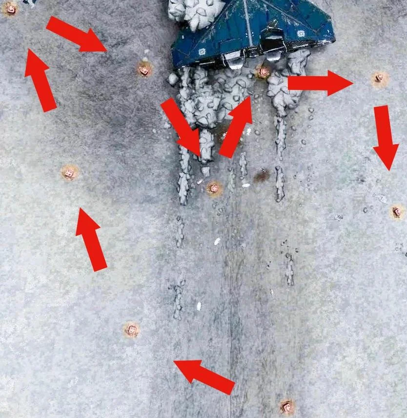

Место крушения Джеймсона
Инженерное дело
›
Материалы и их сбор
Просканируй терминалы из башни планетохода, перезайди в игру, когда хранилище заполнится, и повтори. Затем обменивай самый распространённый тип данных на остальные. После обновления 2025 года число точек сканирования выросло с четырёх до девяти, а материалов стало больше. Основные виды данных теперь можно набрать за один заход.
На небесном теле 1 B в системе HIP 12099 лежат обломки корабля Cobra Mk III погибшего командира Джона Джеймсона (идентификатор JJ-386). Вокруг обломков расположены терминалы данных, которые можно просканировать из башни планетохода ради кодированных материалов. Это третий тип материалов. Они часто нужны для улучшения FSD, сенсоров, щитов и основных модулей.
После обновления 2025 года число точек сканирования выросло с четырёх до девяти, а материалов стало больше, так что основные виды данных теперь можно набрать за один заход. Принцип тот же, что при сборе из высококлассных сигналов (HGE): быстрее всего набирается один вид материала, перехват адаптивных шифровальщиков (Adaptive Encryptors Capture, G5), а затем его можно обменять на всё остальное. По отзывам, получить через обмен, например, исключительные данные о гиперследах (Datamined Wake Exceptions) примерно вдвое быстрее, чем собирать их напрямую.
На месте крушения собирай кодированные материалы, из высококлассных сигналов — изготовленные G5, а у кристаллических осколков — сырьё G4. Вместе три маршрута покрывают все типы материалов.
Требования такие же скромные, как для других наземных маршрутов. На корабле для исследований (например, Asp Explorer) обычно уже есть всё необходимое:
Оружие, щиты и боевое оснащение не нужны: обломки заброшены, противников нет. Приземлись, выпусти планетоход и просканируй терминалы.
После первого посещения запись «Jameson Crash Site» появится в левой панели навигации, и искать по координатам больше не придётся.
Прыгни в HIP 12099, просканируй систему сканером обнаружения и лети к 1 B.
Запусти зонд подробного сканера поверхности на 1 B, затем лети к координатам -54.37, -50.35. В следующий раз просто выбери «Jameson Crash Site» в панели навигации.
Припаркуйся прямо позади разбившейся «Кобры»: оттуда из башни видна основная группа терминалов, можно сканировать не трогаясь с места.
Наводи башню по очереди на каждый терминал. После обновления таких точек 9. Возможно, придётся немного проехать вперёд, чтобы достать до самых дальних.
Когда увидишь сообщение «Не удаётся получить данные: хранилище заполнено», выйди в главное меню, смени режим (открытый, частная группа или одиночный) и просканируй терминалы снова.
При сканировании услышишь последние записи Джеймсона. Ради истории стоит сделать это хотя бы раз.
Заполни до предела запасы архивов нетипичного шифрования (Atypical Encryption Archives, G4) и перехвата адаптивных шифровальщиков (Adaptive Encryptors Capture, G5), затем лети на Ray Gateway.

При сканировании выпадают четыре вида кодированных материалов. Два из них относятся к категории шифрования и служат запасом для обмена. Их стоит набрать до предела:
| Материал | Ступень | Категория |
|---|---|---|
| Перехват адаптивных шифровальщиков (Adaptive Encryptors Capture) | G5 | Шифрование · для обмена |
| Архивы нетипичного шифрования (Atypical Encryption Archives) | G4 | Шифрование · для обмена |
| Взломанное промышленное ПО (Cracked Industrial Firmware) | G3 | Прошивки |
| Изменённое потребительское ПО (Modified Consumer Firmware) | G2 | Прошивки |
Возьми данные шифрования и через два прыжка обменяй их у торговца кодированными материалами на то, чего не хватает. Выгодность обмена зависит от двух правил:
При обмене на более низкую ступень в той же категории получаешь больше единиц. При обмене между категориями на той же ступени курс хуже. Если запас шифрования уже набран, чаще всего выгоднее сначала сменить категорию, затем ступень на более низкую внутри нужной категории.
Перехват адаптивных шифровальщиков (Adaptive Encryptors Capture) — G5 · запас для обмена
Модифицированное встроенное ПО (Modified Embedded Firmware) — G5
Исключительные данные о гиперследах (Datamined Wake Exceptions) — G5 · для FSD
Необычные данные о частотах щитов (Peculiar Shield Frequency Data) — G5
Аномальные компактные излучения (Abnormal Compact Emissions) — G5
Фрагмент засекреченных сканов (Classified Scan Fragment) — G5
Установи сканер гиперследов (Frame Shift Wake Scanner) и по пути сканируй следы кораблей у оживлённых станций или в районах добычи ресурсов (RES). Так запасы всей категории будут пополняться сами собой и тратить материалы шифрования на обмен не придётся.
Трёх-четырёх заходов по 30 минут обычно достаточно, чтобы заполнить запасы. Маршрут однообразный: делай перерывы, когда надоест, вместо того чтобы пытаться набрать всё за один присест.
Данные страницы сверены авторами с источниками ниже.
После обновления 2025 года точек данных стало девять, а выход материалов вырос. В Live используй координаты −54.37, −50.35 вместо старых координат из версии до 4.0.